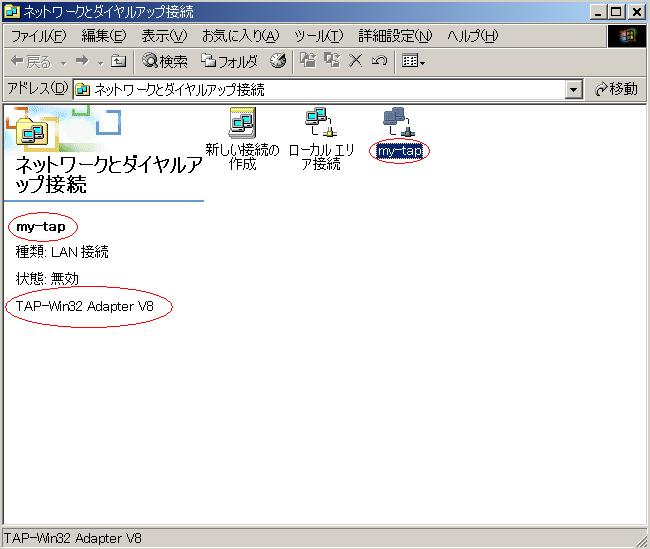
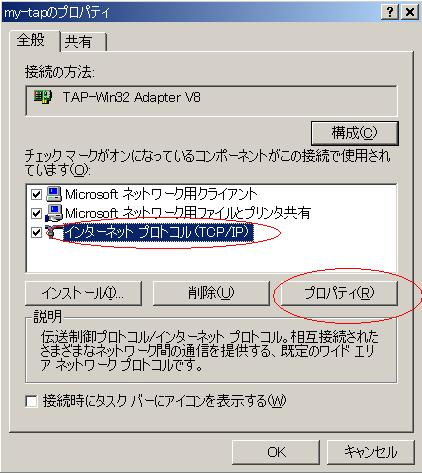
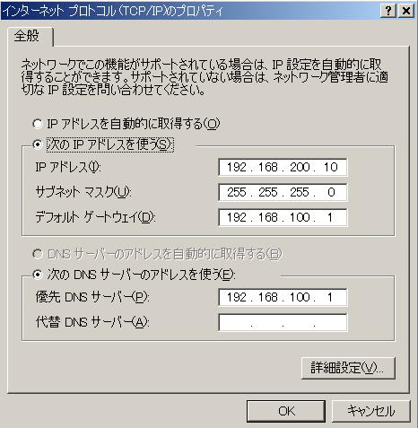
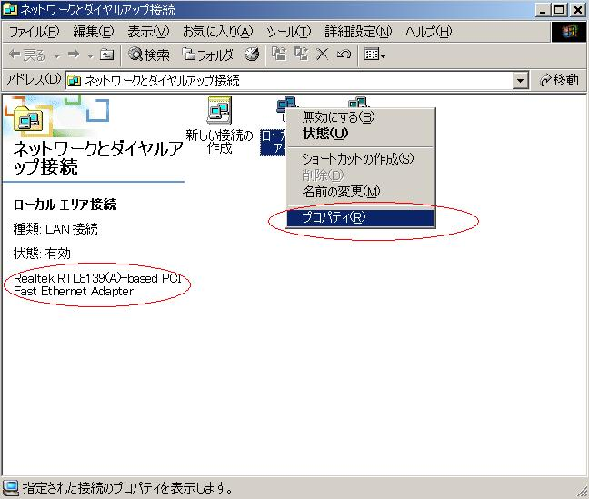
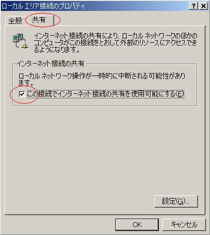
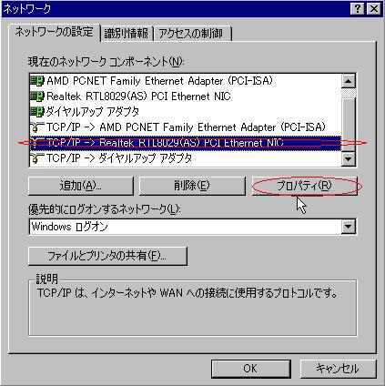
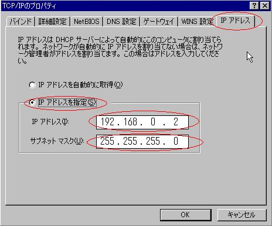
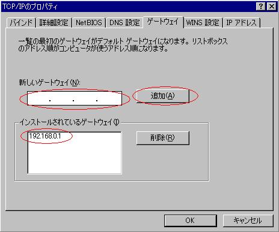
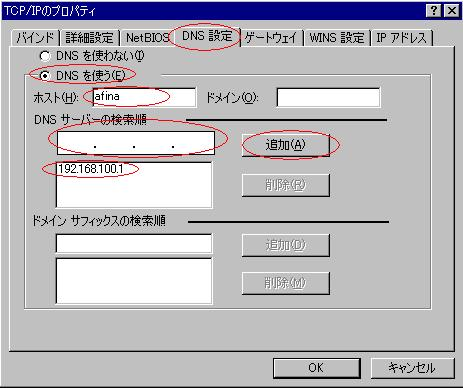

Options are:
-net nic -net tap,ifname=my-tap
Use ifname to set a name of Tap.
my-tap is the name of my TAP-Win32 Adapter.
NE2000 PCI, RTL8139, PCNET and NE2000 ISA cards are available for the network card.
-net nic,model is used to set the model. See here.
-net nic -net tap,ifname=my-tap
-net nic,model=rtl8139 -net tap,ifname=my-tap
-net nic,model=pcnet -net tap,ifname=my-tap
-M isapc -net nic -net tap,ifname=my-tap
Please use a OpenVPN ver.2.0 from OpenVPN.
It supports on Windows 2000/XP. Windows 98/Me are not supported. name
is a name of connection of TAP-Win32 Adapter V8 in Network and Dial-up
connections in control panel. Please rename it if it is Local Area
Connection 2 or 3.
You can also see it like this.
[Dos Prompt] openvpn --show-adapters
Available TAP-WIN32 adapters [name, GUID]:
'my-tap' {xxx-yyy-zzz}
Then set IP address from property of my-tap.
|  |  |  |
If you use Windows 2000 as a host OS, it is difficult a little to see
the Internet. It is easier on Windows XP. Use Internet Connection
Sharing(ICS).
When you use ICS, an IP address of Tap is forced to 192.168.0.1. If you
use a router in a real network and use 192.168.0.1 as the router's
address, you can not use the network. Please set the router to use
192.168.1.1 and 192.168.1.x as a network.
Then right-click on a real network adapter and select property. Select sharing and check to use ICS. Then push OK. The IP address of Tap adapter is set to 192.168.0.1
|  |  |
Use one Tap for Win32 Adapter and two guest OSes.
ICS
Redhat1 NE2000 ----------- Host TAP --------- Host NIC -------- Router------ Internet
192.168.0.2 | 192.168.0.1 192.168.100.2 192.168.100.1
| (fixed) (DNS server)
Redhat2 NE2000
192.168.0.3
It is necessary to set ICS to browse the Internet. See above. IP address of Tap for Win32 is fixed to 192.168.0.1.term1$ qemu -L ./pc-bios -hda redhat1.img -net nic -net tap,ifname=my-tap
-net socket,listen=localhost:1234
term2$ qemu -L ./pc-bios -hda redhat2.img -net nic,macaddr=52:54:00:12:34:01
-net socket,connect=localhost:1234
It is necessary to set macaddr for the second OS.Redhat1 guest> ifconfig eth0 192.168.0.2 Redhat1 guest> route add default gw 192.168.0.1 eth0 Redaht2 guest> ifconfig eth0 192.168.0.3 Redhat3 guest> route add default gw 192.168.0.1 eth0And set DNS servers to /etc/resolv.conf for each guest OS.
nameserver 192.168.100.1Windows 98 guest
|  |  |  |  |
When I use ZoneAlarm, ping doesn't work. A firewall software may block network packets.
Don't use the same network address as the physical network!
For example, if the physical network is 192.168.0.x, use different network 192.168.10.y.
{kind=link}
{kind=link}
{kind=link}
{kind=link}
{kind=link}
{kind=link}
{kind=link}
{kind=link}
{kind=link}